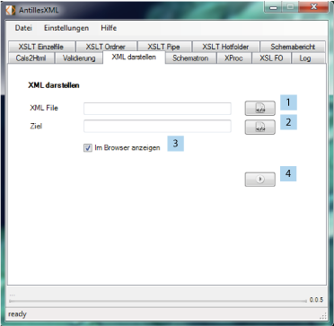

Diese Funktion erzeugt eine HTML Seite, welche das eingelesene XML File durch Syntaxhighlighting
(eine gut lesbare Ansicht des XML Textes) darstellt. Auch hier wird mit einem hinterlegten
Stylesheet gearbeitet.

Zunächst muss die Eingabe Datei angegeben werden (1). Nun das Ziel (2) um dann die Operation zu starten (4). Weiterhin kann angegeben werden ob das Resultat direkt im Standardbrowser angezeigt werden soll oder nicht.